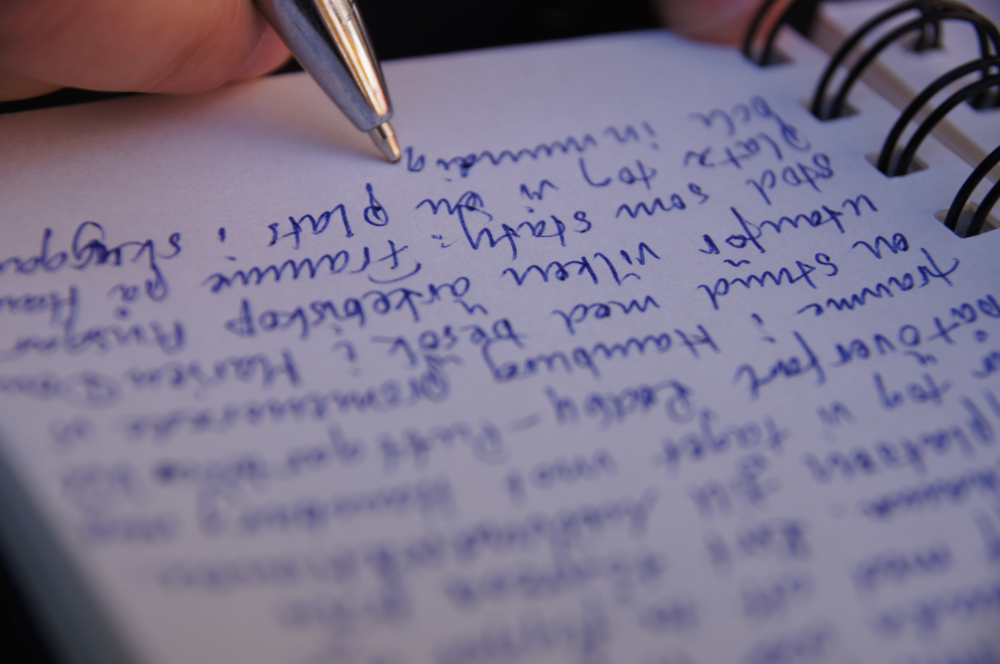

The following anthologies include James's work:
American Society: What Poets See, Edited by Robert S. King (Future Cycle Press, 2012)
Divining Divas, Edited by Michael Montlack (Lethe Press, 2012)
American Tensions: Literature of Identity and the Search for Justice, Edited by William Reichard (New Village Press, 2011)
Collective Brightness: LGBTIQ Poets on Faith, Religion, and Spirituality, Edited by Kevin Simmonds (Sibling Rivalry Press, 2011)
The Heart of All That Is: Reflections on Home, Edited by Jim Perlman, Deborah Cooper, Mara Hart, and Pamela Mittelfelhdt (Holy Cow! Press, 2013)
Two Weeks: A Digital Anthology of Contemporary Poets, Edited by Ash Bowen and Johnathon Williams (Linebreak.org: 2011)
The Wind Blows, The Ice Breaks, Edited by Ted Bowman and Elizabeth Bourque Johnson (Nodin Press, Minneapolis: 2010)
Nebraska Presence: A Poetry Anthology, Edited by Greg Kosmicki and Mary K. Stillwell (Backwaters Press, 2007)
Regrets Only, Edited by Martha Manno (Little Pear Press, 2006)
Aunties: Thirty-Five Writers Celebrate Their Other Mother, Edited by Ingrid Sturgis, (Ballantine, 2004)